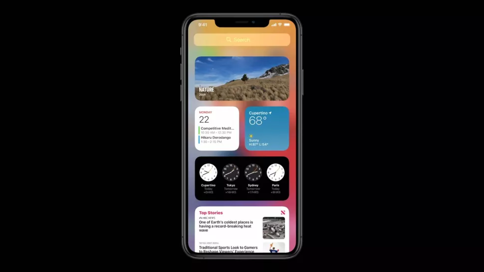
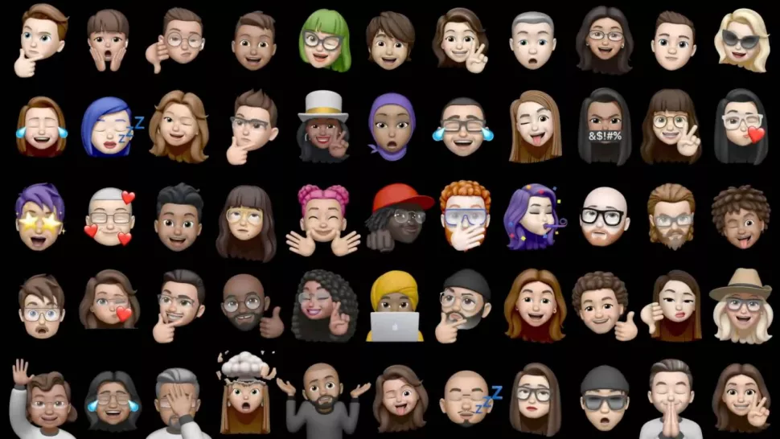
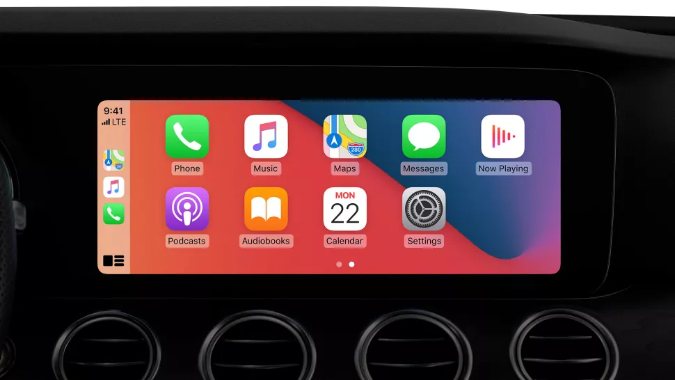
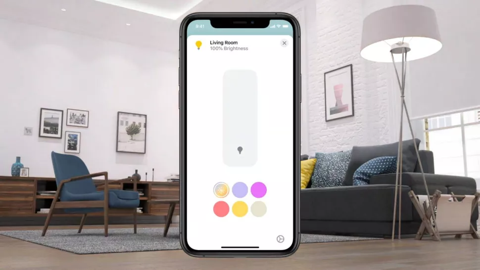
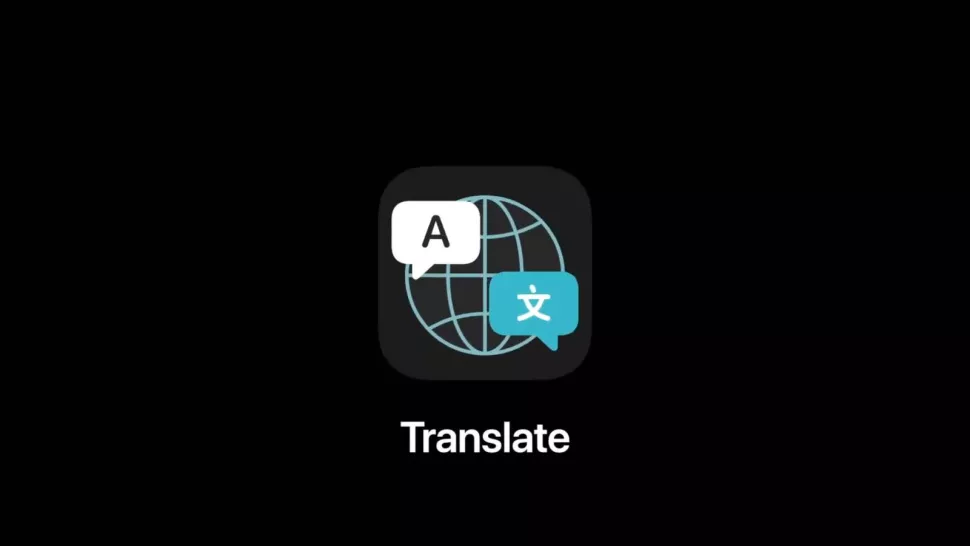
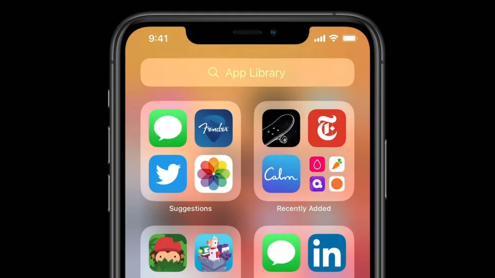
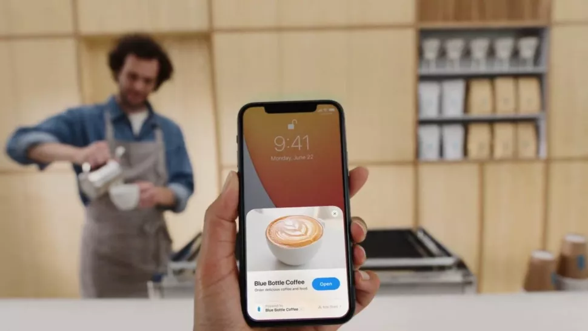

Handphone
IOS 14 : All The Features And Improvement
The Update That We've Been Waiting For
The iOS 14 release date can't come soon enough, as Apple is introducing a host of new, long-overdue changes that are coming to your iPhone in 2020. New iOS 14 features include widgets finally coming to the home screen to break up that stagnant app tile look, picture-in-picture so you can watch videos in the screen corner while doing other tasks and digital keys to unlock your car with an iPhone. No, Apple didn't unveil the iPhone 12 at WWDC. But this operating system update did give us insight as to where the company is headed with the new iPhone, and it's the software that you'll experience when unboxing the iPhone 12 later this year. Developers won't have to wait, of course. They can already get the iOS 14 beta, with a public beta for consumers scheduled to launch in July.
iOS 14 Home Screen Widgets
Proper widgets are debuting on your iPhone with iOS 14. These now come in a variety of sizes, and they look like they're far more attractive than what we've seen in previous versions of iOS. Apple even referred to these more "data-rich", and that makes sense when you see them above. The company says it has learned from the way widgets work on Apple Watch, and it wanted to bring that functionality across to iPhone. You can pick different sizes – although those have yet to be confirmed – and widgets can now be used on your home screens, as well as in the Today view on your phone. There's a specific Widget Gallery where you can find these on your phone. Exactly which apps will get widgets is unclear, but we've seen marketing materials from Apple that include your clocks, Apple News, Weather, Calendar and many more. You can also stack the widgets too, so they won't take up as much space on your screen. According to 9to5Mac, these will intelligently stack according to factors like time of day and more.
iOS 14 App Library and Interface
A new feature called the App Library also comes at the end of your home screens within iOS 14. This is a way of better organizing your apps, and it essentially files different services away without you manually having to do it. All your social apps, for example, would appear in one folder. One of the options shown on the WWDC live stream included all your Apple Arcade games. This should all work automatically, and it'll only appear at the end of your home screens. Plus, you can now hide specific apps that you don't want on your home screens, and they'll appear in the App Library instead. Don't want people to know you've got fast food apps on your phone? Hide them and you'll still be able to find them in the App Library later. The interface of the way you receive phone calls is set to change. Instead of taking up the whole screen - a pain point for many iOS users - the notification will now appear at the top of the screen. This means you'll be able to answer a phone call easily, but you can also ignore it and continue using your phone as per normal. to wait for the phone call to finish without manually hanging up. One new interface feature doesn't use the screen at all. A new option called Back Tap allows you to navigate through phone menus by tapping on the rear of the handset. You can set it up for two or three taps, and shortcuts that can be set up include taking a screenshot or changing the volume. There's also a new feature that allows you to long press the back button to return to your original app. This should make navigation that touch easier when you're cycling through a variety of apps. Lastly, you can now also change the default app your phone uses for email or browsers. This has been a long time coming, and iOS 14 will now mean you can switch to an alternative like Google Chrome or Gmail to be your default app.
iOS 14 picture-in-picture
Another new update included better picture-in-picture functionality. It should allow you to keep watching video at the same time as using other apps. Got a message on your phone while you're in the middle of a TV show? Now you can reply without it stopping.
iOS 14 Messages
The Messages app is getting a variety of updates, including the facility to pin conversations. Want to always have one particular person at the top of your messaging app? Now, you can. Other improvements include 20 new hair and headwear styles for Memoji that allows you to better customize your character. There are also face coverings for those who want the 2020 look. Groups are getting improvements too, including inline replies for specific messages as well as @mentions that allows it to work more like Slack than you ever wanted your personal messaging app to.
iOS 14 CarPlay
Ever wanted to leave your car keys at home? Well, if you have a compatible car you'll now be able to get digital keys that enable you to unlock and turn on your car through your iPhone. This is specifically for the upcoming 2021 BMW 5 Series at the moment, but this is set to come to other car models in the future. Apple wasn't able to confirm any models or manufacturers yet, but expect this to be something car companies will get excited about.
iOS 14 smart home controls
iOS 14 will also give you more control over your smart home, with expanded smart home controls available in Control Center. The Home app will also offer more automation suggestions, so you won't have to manually control devices as much anyway.
iOS 14 Siri
Siri has been redesigned for iOS 14, and now the reactions from your voice assistant won't take up the entirety of the display; instead, they'll appear as small notifications at the top of your phone, just as regular notifications appear. This looks like it'll make Siri far easier to use on your iPhone. We've never really understood why Siri's functionality had to take up the entirety of your screen, and it may mean you're more likely to use the voice assistant. There are also a variety of upgrades going on behind the scenes, which Apple believes will make Siri a far more useful voice assistant than it has been previously. Siri will also provide more accurate translations than before, and it can now send audio messages for the first time too.
iOS 14 accessibility
These upgrades are minor for iOS 14, but there's a big one that may be helpful for hearing-impaired users. Advertisement Within the new update, you'll be able to set up your iPhone to listen out for specific noises such as a fire alarm or a siren. If the phone hears the noise, it'll notify the user. According to Apple, this is all done using on-device technology so it won't be sending any of your data onto the internet to allow for this feature.
iOS 14 App Clips
Have you ever needed an app but didn't want to download it? App Clips is a new functionality that will land in iOS 14, which will allow you to use an app without having to download lots of hefty files. Apple is calling these "light and fast", and you access them via a card that pops up at the bottom of your screen. You'll then be able to use specific features of certain apps without having to download them from the App Store. This would be useful, for example, if you're looking to use a electric scooter that unlocks with an app, but you don't want to spend time downloading the service when you're out and about. Advertisement App Clips can appear in a variety of ways. For example, they could appear after someone refers to an app within your Messages. Plus Apple is also issuing NFC tags that you may see in your day-to-day life. Say there's one on an electric scooter – you'd be able to tap that NFC tag, and you'd be able to immediately use the app without having to download it. This is similar to Android features we've seen before, but it's the first time iPhone users will have these sort of features. If you're loving a particular service, you'll then be able to download the full app directly from the App Clip without having to go to the App Store.
Source: https://www.techradar.com/news/ios-14-release-date-beta-features-and-supported-iphones